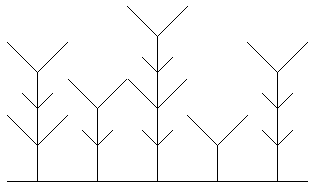

Zadania trzeciego etapu II Warszawskiego Konkursu Informatycznego
rok szkolny 1995/96
Zadanie 1.
Napisz procedurę jednoparametrową LAS :lista, rysującą na ekranie las na podstawie zdania podanego jako parametr:
- Liczba drzew ma być równa liczbie słów w zdaniu.
- Kolejne rysowane drzewa, od lewej do prawej, mają odpowiadać kolejnym słowom parametru.
- Od pnia, po obu jego stronach, w górę pod kątem 45o, powinny wyrastać pary gałęzi.
- Kolejne pary gałęzi, od dołu ku górze, mają odpowiadać kolejnym literom słowa opisującego drzewo.
- Długość gałęzi dla spółgłosek ma być dwa razy mniejsza od długości gałęzi dla samogłosek.
Rysunek powinien wykorzystywać cały ekran. Wszystkie drzewa mają mieć tę samą szerokość. Odległości pomiędzy pniami sąsiednich drzew powinny być jednakowe. Wysokość pnia drzewa powinna być wprost proporcjonalna do liczby liter w słowie opisującym dane drzewo. Poziome podłoże jest elementem tworzonego rysunku. Lista opisująca las może zawierać od jednego do dziesięciu niepustych słów składających się jedynie z małych liter alfabetu łacińskiego.
LAS [hokus pokus abrakadabra]

LAS [ala ma kota i psa]
Zadanie 2.
Napisz funkcję PRZESTAW :zdanie, której wartością będzie zdanie zawierające wszystkie słowa zdania podanego jako parametr, ale poprzestawiane tak, aby na początku znajdowały się słowa zawierające literę a (w tej samej kolejności jak na danej liście). Parametrem funkcji może być tylko lista słów składających się jedynie z małych liter alfabetu łacińskiego. Wynik również powinien być listą słów. Poniżej przedstawiamy przykładowe wyniki:
| PRZESTAW [ala ma kota i psa] | ma wartość [ala ma kota psa i] |
| PRZESTAW [hokus pokus abrakadabra] | ma wartość [abrakadabra hokus pokus] |
Zadanie 3.
Lista liczbowa to taka lista, której każdy element jest liczbą naturalną lub listą liczbową. Na przykład lista [[2 3] 1 [3] [[5 2] 1] 2] jest listą liczbową, bo jej elementy: drugi i piąty (to jest 1 i 2) - są liczbami naturalnymi, a elementy: pierwszy, trzeci i czwarty (to jest [2 3], [3] i [[5 2] 1]) - są listami liczbowymi. Lista pusta też jest listą liczbową.
Jeśli z zapisu listy liczbowej usuniemy wszystkie nawiasy kwadratowe, to otrzymamy skończony ciąg liczb; będziemy je nazywali składnikami listy liczbowej. Liczba składników listy liczbowej na ogół nie jest równa liczbie jej elementów, np. lista podana powyżej ma pięć elementów oraz osiem składników (2, 3, 1, 3, 5, 2, 1, 2).
Dla każdego składnika listy liczbowej określamy jego poziom na tej liście w następujący sposób:
- wszystkie składniki listy liczbowej, które są jej elementami mają poziom 1,
- wszystkie elementy elementów listy liczbowej mają poziom 2,
- wszystkie elementy elementów elementów listy liczbowej mają poziom 3, itd.
Np. składniki: 2, 3, 1, 3, 5, 2, 1, 2 listy liczbowej [[2 3] 1 [3] [[5 2] 1] 2] mają odpowiednio poziom: 2, 2, 1, 2, 3, 3, 2, 1.
Wagą składnika listy liczbowej nazywamy iloczyn tego składnika przez jego poziom. Wagą listy liczbowej nazywamy sumę wag jej składników, listy puste i listy złożone z list pustych mają wagę zero.
Zdefiniuj funkcję WAGALISTY :lliczb, której wartością jest waga listy liczbowej podanej jako parametr. Zakładamy, że dany parametr funkcji będzie zawsze poprawną listą liczbową i napisane procedury nie musza tego sprawdzać. Oto przykładowe wyniki:
| WAGALISTY [[2 3] 1 [3] [[5 2] 1] 2] | ma wartość 42 |
| WAGALISTY [[] 2 [] [[1]]] | ma wartość 5 |
| WAGALISTY [[] []] | ma wartość 0 |